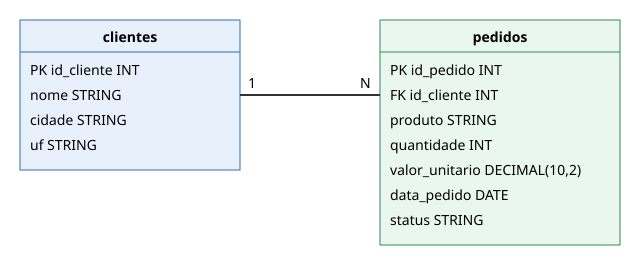

Contextualização do Trabalho
Trabalho de pesquisa da disciplina Engenharia de Dados (Engenharia de Software – 5ª fase – SATC), professor Jorge Luiz da Silva.
Objetivo
Criar um ambiente PySpark + JupyterLab, gerenciado com UV, e demonstrar os comandos INSERT, UPDATE e DELETE em tabelas dos formatos Delta Lake e Apache Iceberg.
Cenário e conjunto de dados
Loja virtual fictícia. O conjunto de dados foi criado pelo grupo e está em data/:
| Arquivo | Conteúdo |
|---|---|
data/clientes.csv |
4 clientes |
data/pedidos.csv |
5 pedidos |
Modelo ER

Um cliente possui vários pedidos (relação 1:N por id_cliente).
DDL (padrão para os dois formatos)
CREATE TABLE clientes (
id_cliente INT, nome STRING, cidade STRING, uf STRING
) USING <delta | iceberg>;
CREATE TABLE pedidos (
id_pedido INT, id_cliente INT, produto STRING, quantidade INT,
valor_unitario DECIMAL(10,2), data_pedido DATE, status STRING
) USING <delta | iceberg>;
Ferramentas utilizadas
| Ferramenta | Uso |
|---|---|
| Pyenv | Versão do Python (3.11) |
| UV | Gerenciador de pacotes e ambiente virtual |
| Git / GitHub | Versionamento e repositório |
| PySpark 3.5.3 | Processamento |
| delta-spark 3.2.1 | Delta Lake |
| iceberg-spark-runtime-3.5_2.12 1.6.1 | Apache Iceberg |
| JupyterLab | Notebooks |
| Pytest, Ruff, Isort, pip-audit | Testes e padrão de código |
| Taskipy | Atalhos de comandos |
| MkDocs | Esta documentação |
Notebooks
src/delta/delta_lake.ipynbsrc/iceberg/apache_iceberg.ipynb